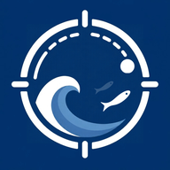

Do OKR ao card
No Radar o Objetivo tem Marcos e uma meta medida. Os cards do Maré podem ser vinculados a ele, então a estratégia anda junto com a entrega.
cards vinculados ao Objetivo

Os produtos do time Digital Hering num lugar só. Entre com a sua conta Google da empresa.
O time Digital planeja, acompanha e entrega em ferramentas diferentes. O Oceano junta as que a gente mesmo construiu: a mesma conta Google, o mesmo sino e o mesmo visual.
No Radar o Objetivo tem Marcos e uma meta medida. Os cards do Maré podem ser vinculados a ele, então a estratégia anda junto com a entrega.
O board atualiza sozinho, sem F5. Dá pra ver quem está online, e a trava de edição evita duas pessoas sobrescrevendo o mesmo Objetivo.
Marque o Agente Ágil num card, ou converse com ele no Radar. Ele lê o contexto e atualiza progresso, riscos e Marcos, com as mesmas permissões que você tem.
A mesma notificação aparece no Maré, no Painel e no Radar, vira push no celular e respeita o seu Não Perturbe.
Só entra quem tem Google @ciahering. As regras do banco aplicam isso no servidor, não só na tela. Tem histórico de alterações e backup semanal automático.
Quem constrói é o próprio time. O ajuste pedido passa por um ambiente de teste, é validado e só então vai pra produção, tudo registrado no changelog.
Vivem no Maré Digital: board, checklist, automações, métricas de fluxo e o Agente Ágil ao lado.
Usa o Painel (visão consolidada, pessoas, comunicados) e o Radar (Objetivos, atingimento, reuniões, apresentação).
O A Bordo recebe quem está entrando no time, com as boas-vindas e o essencial pra começar.
A gente configura o squad, conecta ao Radar e acompanha as primeiras semanas.
Páginas estáticas, banco em tempo real e funções na nuvem só onde precisa. Simples de manter e rápido de evoluir, com o acesso decidido no servidor.
| Produto | Produção | Em teste (dev) |
|---|---|---|
| Conferindo as versões… | ||